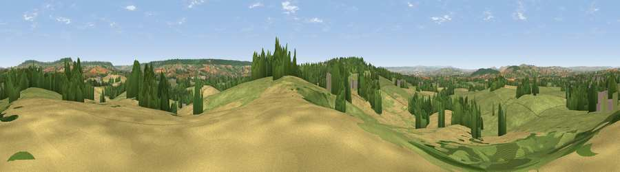

Viewpoint near Talaton
#15018 in England · top 22% of its area beats it · near TalatonThe view, rendered

A 360° render of this exact spot computed from the terrain model, tree cover and land cover — summer colours, afternoon light, calibrated against photographs of famous viewpoints. Real trees, hedges and buildings will differ in detail.
The panorama
Grey silhouette: terrain skyline in each direction (720 bearings, Earth curvature and refraction included). Dashed green: skyline with trees (+15 m) and buildings (+8 m) as obstacles. Blue strip: how far the ground is visible on each bearing.
Where the view opens
Wedge length = distance to the farthest visible ground on that bearing (vegetation-aware). Rings at 10, 25 and 50 km.
What fills the view
59% grassland · 25% cropland · 14% woodland · 2% built-up
Angular shares of the visible panorama (visual magnitude), not map area. Landscape diversity 0.44 (0–1 Shannon).
Key numbers
More beautiful places nearby
The staircase of upgrades: each row has a higher view potential than everything closer. Driving times are estimates from straight-line distance, calibrated against real road routing — check an actual route before setting out.
| Place | Direction | Drive | Score |
|---|---|---|---|
| Viewpoint near Whimple | SSW · 1 km | ~4 min | 64.6 |
| Viewpoint near West Hill | SSW · 2 km | ~6 min | 66.2 |
| Viewpoint near Gittisham | E · 6 km | ~13 min | 68.2 |
| Hembury | NE · 6 km | ~14 min | 75.9 |
| Viewpoint near Tipton St John | SSE · 8 km | ~16 min | 81.5 |
| Viewpoint near Colaton Raleigh | SSE · 11 km | ~21 min | 82.1 |
| Viewpoint near Sidmouth | SSE · 12 km | ~22 min | 83.0 |
| High Peak | SSE · 13 km | ~23 min | 85.3 |
50.77478, -3.31998 · source: screening · position refined by local search. Computed location — check access rights before visiting.